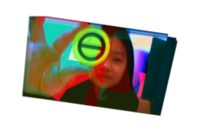

<!DOCTYPE html>
<!--[if gt IE 8]><!--> <html class="no-js"> <!--<![endif]-->
<head>

	<meta charset="utf-8">
	<meta http-equiv="X-UA-Compatible" content="IE=edge">
	<meta name="viewport" content="width=device-width, initial-scale=1">
	<meta name="description" content="Free HTML5 Website Template by FreeHTML5.co" />
	<meta name="keywords" content="free html5, free template, free bootstrap, free website template, html5, css3, mobile first, responsive" />
	<meta name="author" content="FreeHTML5.co" />

	<!-- Place favicon.ico and apple-touch-icon.png in the root directory -->
	<link rel="shortcut icon" href="favicon.ico">
	<!-- Animate.css -->
	<link rel="stylesheet" href="css/animate.css">
	<!-- Icomoon Icon Fonts-->
	<link rel="stylesheet" href="css/icomoon.css">
	<!-- Bootstrap  -->
	<link rel="stylesheet" href="css/bootstrap.css">
	<!-- Owl Carousel -->
	<link rel="stylesheet" href="css/owl.carousel.min.css">
	<link rel="stylesheet" href="css/owl.theme.default.min.css">
	<!-- Theme style  -->
	<link rel="stylesheet" href="css/style.css">
	<!-- Modernizr JS -->
	<script src="js/modernizr-2.6.2.min.js"></script>

</head>

<body>
	<div id="fh5co-page">
		<a href="#" class="js-fh5co-nav-toggle fh5co-nav-toggle"><i></i></a>
		<aside id="fh5co-aside" role="complementary" class="border js-fullheight">

			<!-- Logo -->
			<div class="row animate-box" data-animate-effect="bounceIn">
				<h1 id="fh5co-logo"><a href="index.html"></a></h1>
				<!-- Menu -->
				<nav id="fh5co-main-menu" role="navigation">
					<ul>
						<li><a href="work.html">work</a></li>
						<li><a href="about.html">about</a></li>
						<li><a href="files/cv.pdf" target="_blank">cv</a></li>
					</ul>
				</nav>
			</div>
			
		</aside>
	</div>

	<!-- jQuery -->
	<script src="js/jquery.min.js"></script>
	<!-- jQuery Easing -->
	<script src="js/jquery.easing.1.3.js"></script>
	<!-- Bootstrap -->
	<script src="js/bootstrap.min.js"></script>
	<!-- Carousel -->
	<script src="js/owl.carousel.min.js"></script>
	<!-- Stellar -->
	<script src="js/jquery.stellar.min.js"></script>
	<!-- Waypoints -->
	<script src="js/jquery.waypoints.min.js"></script>
	<!-- Counters -->
	<script src="js/jquery.countTo.js"></script>
	
	
	<!-- MAIN JS -->
	<script src="js/main.js"></script>

</body>
</html>

